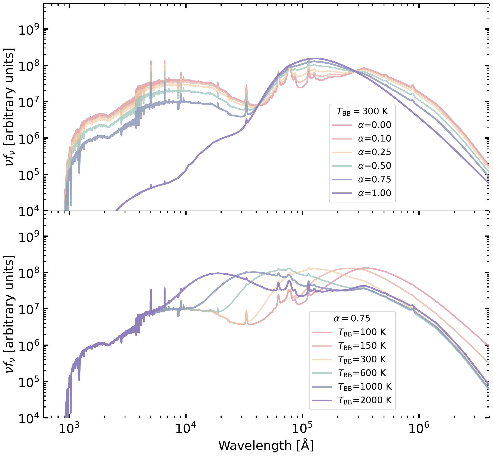
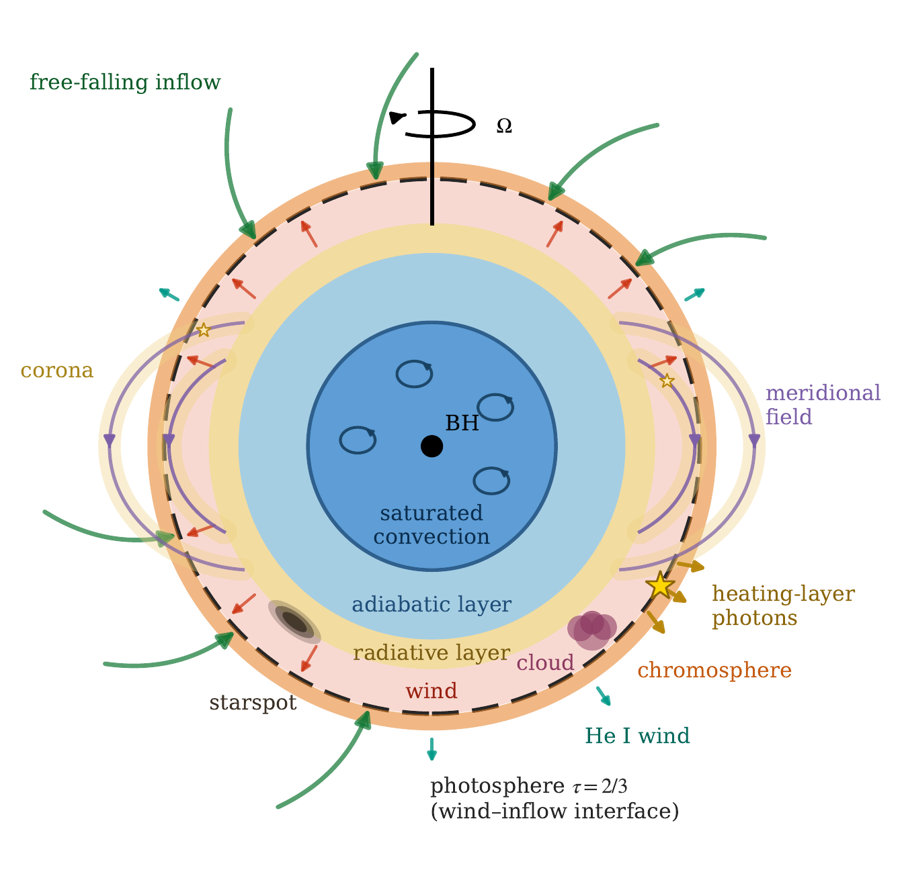
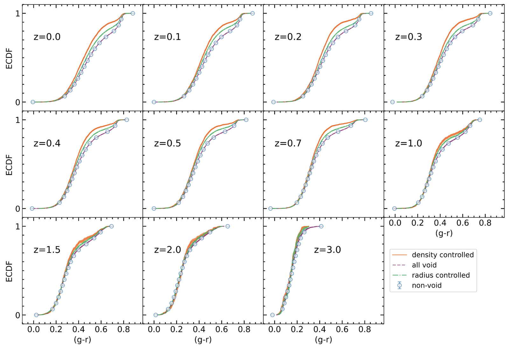

ORCiD
ORCiD

Olivia Curtis
she/her
ocurtis@psu.edu
I am a PSETI Center Postdoctoral Fellow at the Penn State University Department of Astronomy and astrophysics. Before moving to state college, I was a graduate student at the Boston University Department of Astronomy and Institute for Astrophysical Research. Before that, I received my B.S. in physics and B.A. in Mathematics from the University of South Florida.
A visualization I made in 2021. The video shows the dark matter density of the Illustris TNG300-3 simulation at redshift 0.
As an astrophysicist, I am interested in galaxy evolution in the context of the cosmic web. Using state-of-the-art magnetohydrodynamics simulations and observational surveys my dissertation work was focused on studying galaxies within cosmic voids. Voids are some of the largest, emptiest regions of the universe, but they are not completely devoid of matter. As such, most of my dissertation work was focused on studying the global population statistics of these so called void galaxies to help put constraints on how the rarefied void environment affects galaxy evolution.
As a postdoctoral researcher, I work with Professor Jason Wright at the Penn State Extraterrestrial Intelligence Center to perform extragalactic SETI searches. I have set out to put robust upper limits on the energy supply of industry in the 10^5 galaxies resolved by the Wide-field Infrared Survey Explorer (WISE). In essence, any star-faring civilization that has spread around its galaxy will have left technosignatures in the mid-infrared light that emanates from that galaxy. Thus, I am looking for galaxies with MIR fluxes that are too high to be explained by the star formation, dust, and active galactic nuclei that the other parts of their SEDs require them to have.
New paper submitted
August 15th, 2026
My paper titled The Ĝ Infrared Search for Extraterrestrial Civilizations with Large Energy Supplies. V. When Galaxies Glow with Industry was recently submitted to the Astrophysical Journal. In it, we rebuilt extragalactic SETI as a forward-modeling problem. We treat Dyson spheres, the energy-collecting swarms an advanced civilization might build around its stars, as just one more ingredient of a galaxy's light, which unlocks the entire modern galaxy-modeling toolkit for the search. We found no such industry in 129 nearby galaxies, which shows the machinery is calibrated and honest and gives the first galaxy-by-galaxy limits on how much starlight could be harvested.

How Dyson spheres change the light of a galaxy. Covering more stars (top, pink to purple) trades starlight for infrared waste heat, and hotter swarms (bottom) glow at shorter wavelengths.
A Spectral Framework for Testing the Quasi-Star Hypothesis in Little Red Dots
August 15th, 2026

A cartoon of a quasi-star. A newborn black hole grows inside a giant star-like envelope whose atmosphere, winds, and chromosphere all leave fingerprints in its light.
In this paper series, we connect the Little Red Dots, a mysterious population of compact red objects that JWST discovered in the early universe, to quasi-stars, newborn black holes that grow inside giant star-like envelopes. If LRDs really are quasi-stars, then their light should carry the same fingerprints that ordinary stellar atmospheres do, which lets us weigh them with the tools that stellar astronomers have used for a century. All of our spectral fits are available on GitHub.
A 3D radiative magnetohydrodynamics simulation we made of a quasi-star shining at its Eddington limit. The video shows the density, temperature, magnetic fields, and winds of its envelope.
So far, every Little Red Dot that we have weighed shines brighter than its own gravity should allow, which means these objects must be blowing off their outer layers as powerful winds. To study how those winds behave, we are running full 3D simulations of quasi-star atmospheres, like the one above, that follow how gas, light, and magnetic fields push on one another and tell us what these objects should look like as they evolve.
New paper accepted
December 20, 2025
My paper titled Void Galaxies and Active Galactic Nucleus Activity in ZOBOV-identified TNG300 Voids from z = 3 to z = 0 was recently accepted for publication in the Astrophysical Journal. In it, we perform one of the most comprehensive studies that look at how void galaxies evolve as a population compared to those in filaments. Tracking how much smaller, less massive, more actively star forming, and less luminous void galaxies tend to be out to z=3.0. We were also the first to show how the AGN fraction of void galaxies evolves over time, finding a higher fraction of AGN within voids at lower redshifts.

How galaxy color scales as a function of local matter density. Galaxies interior to the void shell-crossing surface (orange) show the highest deviation from filament galaxies (circles).
HETDEX Voids at the 246th AAS Meeting
July 12th, 2025

Voids in the HETDEX fall field.
This summer I presented a catalog of voids in the Hobby-Eberly Telescope Dark Energy Experiment (HETDEX) field (top) at the 246th AAS meeting in Anchorage, Alaska.
I selected ~150 galaxies in and around a single void that is in the the Spitzer/HETDEX Exploratory Large-Area (SHELA) field, which has broadband photometric coverage ranging from ~0.4-4.5 microns. I used this photometry, along with the stellar population synthesis code Prospector, to derive average star formation history profiles for galaxies in and around voids (bottom).

Star formation rate in void galaxies.
New paper accepted
April 23rd, 2025
My paper titled Density Profiles of TNG300 Voids across Cosmic Time was recently accepted for publication in the Astrophysical Journal. In it, we measure the clustering bias between galaxies and dark matter particles in the TNG300 simulation from the present day to the over 10 billion years ago, making predictions for the void radial profiles that the ongoing Euclid survey will be making in the coming years.

Void density profiles over cosmic time.